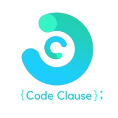
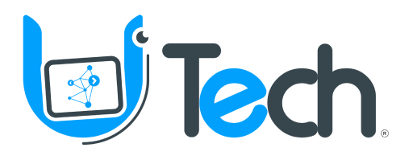
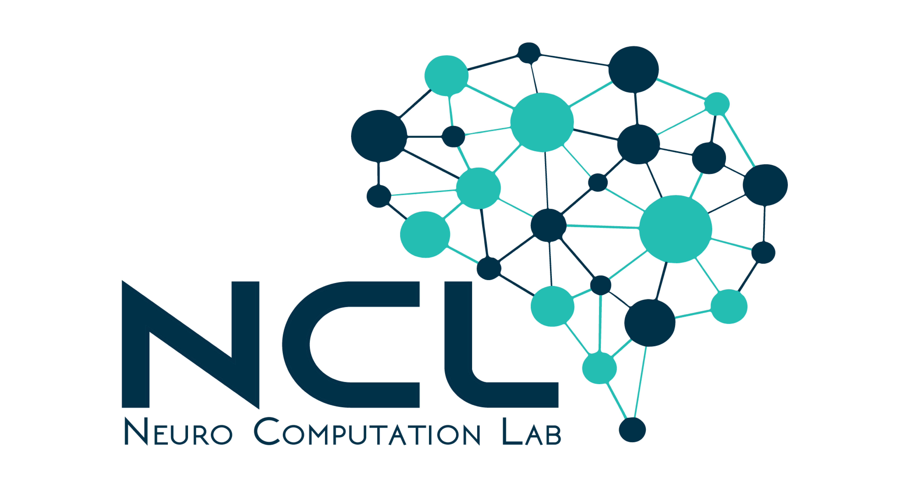
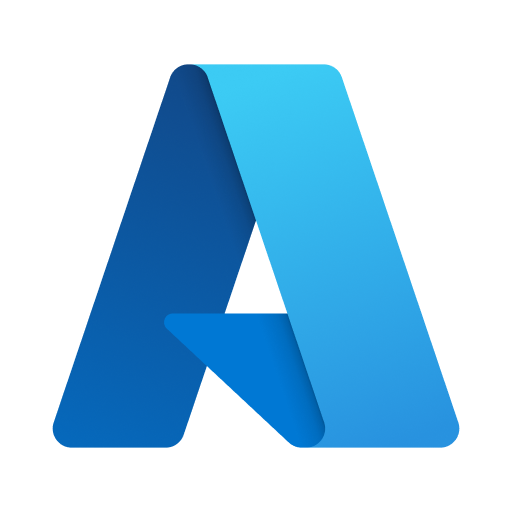
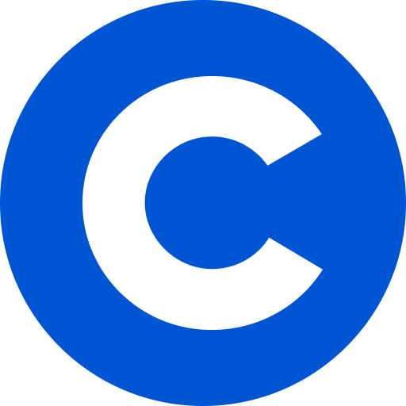
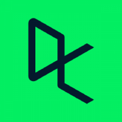
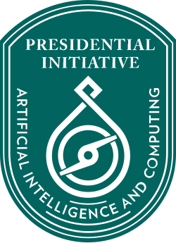

lower LLM latency in production
A computer scientist, teacher & lifelong learner
Hi, I’m Faizan. I build thoughtful AI.
I’m a PhD student exploring how to make AI more reliable. I’m happiest untangling a hard problem, helping someone learn something new, or getting happily lost in a good book.
Glad you’re here
increase in sales with personalized recommendations
documents indexed in one go for a client
in Pakistan in the Meta Hacker Cup practice round
A few things I’ve worked on
Selected projects.
From multimodal memory to AI agents, I like turning ambitious ideas into working systems.
01 — Multimodal AI
Revisiting Memories
A multimodal memory assistant that helps people with memory loss find previously seen objects using natural language, images, or voice.
02 — AI infrastructure
AI workflows & coding agents
Built multi-step AI workflows and a coding-agent connector to bring a cloud agent into users’ local files, tools, and MCPs.
03 — Computer vision
Go Cart
An AI-powered cashierless shopping prototype using computer vision to identify and track products as customers shop.
04 — Responsible access
Fine-grained authorization
Designed a relationship-based authorization system to support fine-grained permissions and GDPR-aware data lifecycle controls.
Where I’ve been
Experience.
A mix of research, AI engineering, and data science—always with a focus on building things that work in the real world.
Aug 2026 — Present
Graduate Research Assistant · Northern Illinois University
Developing autonomous agents to simulate cyberattacks against software systems, then analyzing attack patterns to evaluate defensive strategies and strengthen software resilience.
Feb 2026 — Jul 2026
AI
AI Engineer · Stealth AI Startup · Contract
Extended an AI platform with multi-step agent workflows and built a CLI connector linking a cloud coding agent to local files, tools, and MCPs.
Sep 2023 — Jan 2026
Software Engineer I, LLMs & AI · Data Science Dojo / Ejento AI
Built AI agent products and client-facing RAG solutions, then scaled document ingestion to process more than 5,000 documents in a single run. Improvements to production AI helped reduce response latency by 70%.
Nov 2022 — Sep 2023
Junior Data Scientist · UdhaarBook
Built 30+ AWS ETL pipelines processing 1TB+ of data and developed a product recommendation system associated with a 30% increase in customer sales.
Sep 2022 — Oct 2022

Data Science Intern · CodeClause
Analyzed sales data, explored fraud detection, and built a chatbot for conversational questions about cryptocurrency.
Jun 2022 — Nov 2022

Data Science Instructor · Utech Digital Education
Taught Python, data science, and machine learning to more than 70 learners online and in person, from school students to PhD researchers.
Jun 2022 — Jul 2022

Computer Vision Intern · Neuro Computation Lab, NED
Prepared newborn screening images for an Indus Hospital research project and trained a computer-vision model to segment and inspect body parts.
A few kind words from people I’ve worked with
In good company.
I’m grateful to have worked alongside people who value thoughtful engineering, curiosity, and getting the details right.
Faizan is one of the most technically sound programmers I have worked with. He was always quick to understand problems and came up with efficient, well-optimized solutions. What stood out most was his technical accuracy and his ability to bring fresh ideas while keeping the implementation practical. He handled his work professionally and was someone you could always rely on for strong technical execution. I would highly recommend Faizan to any team looking for a genuinely skilled programmer.
Faizan is an exceptional professional who learns quickly and explores problems in depth before implementing reliable, scalable solutions. He designed a coding agent capable of generating full artifacts, expanding what our agentic AI system could do, and separately built a stable, scalable pipeline for document ingestion that held up well as data volume grew. Whatever problem comes his way, he takes full ownership and consistently lands on the best technical approach. He'd be a strong asset to any team solving hard problems.
A bit about me
Engineering for the real world.
I’m pursuing a PhD in Computer Science at Northern Illinois University, where I study how to make AI more dependable. What keeps me curious is the human side of it: how we know when a system is right, how it can earn people’s trust, and what it feels like to use.
Before grad school, I built AI and data products. I’ve also taught Python, machine learning, and data science to students with all kinds of backgrounds, in classrooms and online with learners across 12+ countries. Seeing someone gain the confidence to solve a problem on their own is still one of my favorite things.
Outside the code editor
A little more human.
I’m happiest when I’m learning something new—whether that’s in a book, in a classroom, or by taking on a challenge.
Always reading
My reading wanders between philosophy, psychology, history, science, novels, and the occasional book that changes how I see things.
Learn, then share
I’ve taught DSA, machine learning, and data science online to learners in 12+ countries, supporting their goals in careers, interviews, exams, and competitions.
Friendly competition
I enjoy the energy of a good problem-solving contest. I’ve competed in data science and programming events and cheered on fellow builders.
Football & chess
Off the clock, I enjoy getting out for a game of football or slowing down for a game of chess.
One page at a time
My reading shelf.
A running list of the books I’ve read, and the ones I hope to pick up next.
202612 books
- A Brief History of Time
- The Courage to Be Disliked
- The Prophet
- Crime and Punishment
- Surely You’re Joking, Mr. Feynman!
- The Myth of Sisyphus
- The Lessons of History
- The Missing README
- Educated — Tara Westover
- The Death of Ivan Ilyich
20253 books
- Thinking, Fast and Slow
- Forty Rules of Love
- The Metamorphosis
20242 books
- 12 Rules for Life
- The Art of War
20236 books
- The Autobiography of Malcolm X
- 1984
- The Personal MBA
- The Kite Runner
- Rich Dad Poor Dad
- A Thousand Splendid Suns
202214 books
- Sapiens: A Brief History of Humankind
- The Compound Effect
- Stillness Is the Key
- Ego Is the Enemy
- The War of Art
- The 5 Second Rule
- Man’s Search for Meaning
- Antifragile
- It Ends with Us
- The Sealed Nectar
- The Nectar of Pain
- Think Like a Monk
- The Psychology of Money
- The Book of Life
20217 books
- Atomic Habits
- Homo Deus
- Can’t Hurt Me
- Skin in the Game
- Mind Platter
- The Almanack of Naval Ravikant
- Meditations
20201 book
- How to Win Friends and Influence People
20192 books
- The Alchemist
- Time Flies
On my to-read list12 books
- The Lean Startup
- How to Not Die Alone
- The Perfect Day to Boss Up
- Cosmos — Carl Sagan
- Facts and Fictions — Bertrand Russell
- The World Philosophy Made
- Mastery — Robert Greene
- The Second Sex
- Manufacturing Consent
- Prisoners of Geography
- Pride and Prejudice
- Karnali Blues
A few milestones along the way
Certifications & learning.
Explore certificates and learning milestones from Microsoft Learn, Coursera, DataCamp, Stanford Code in Place, and PIAIC.

Microsoft Azure
- AI-102 · Azure AI Engineer Associate
- DP-900 · Azure Data Fundamentals
- AZ-900 · Azure Fundamentals
- Azure Solutions Architect Expert
- Azure Data Engineer Associate
- Azure Administrator Associate
- Azure Developer Associate

Stanford Code in Place
- Stanford Online Certificate · 2025
- Stanford Online Certificate · 2026
- Volunteer Section Leader · 2025 & 2026
- Programming fundamentals for students worldwide

DataCamp
- Certified Data Science Associate · 65+ additional certificates
- Machine Learning Fundamentals
- Keras Toolbox
- Machine Learning Scientist
- Data Analyst
- Data Scientist
- Python Fundamentals

Internet of Things Developer
- Certified by the Presidential Initiative for Artificial Intelligence and Computing (PIAIC)
- View verified PIAIC credential
Beyond the day job
Community & recognition.
Five first-place finishes in data science and speed-programming competitions, including PROCOM, ITEC, SPECTRUM, MPERC, and TECHFEST.
Placed 6th in Pakistan in the 2023 Meta Hacker Cup practice round.
Recognized by Pakistan’s President after finishing among the top students in the PIAIC IoT Developer program.
Named UdhaarBook Player of the Quarter in Q1 2023 for data team contributions.
Co-founded Qubitcoders, a 100+ member competitive programming community at NEDUET.
Taught and mentored learners across 12+ countries in DSA, machine learning, and data science—supporting career, interview, exam, and competition goals.
Recognized at Data Science Dojo with the Giant Leap Award (H2 2024) and Dot Award (Q4 2025).
Good people, big moments
A few competition memories.
Some favorite snapshots from the teams, contests, and communities that made the journey memorable.


Have a question or an interesting idea?
Let’s make something matter.
Get in touchfaizan2sheikh@gmail.com